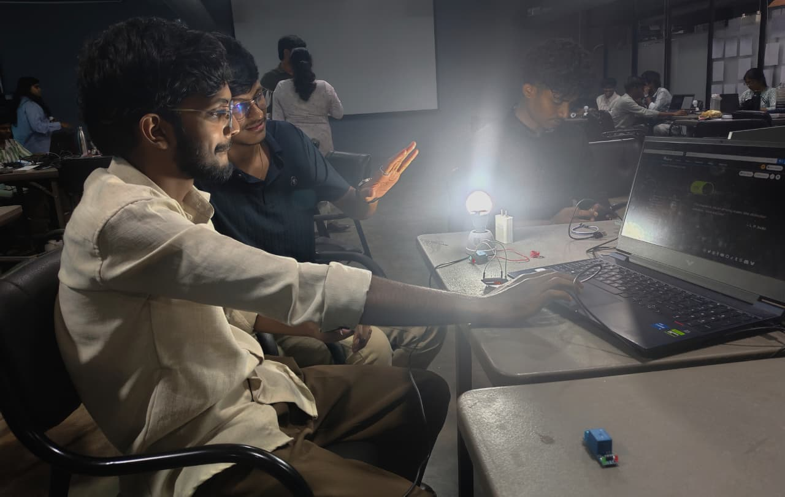
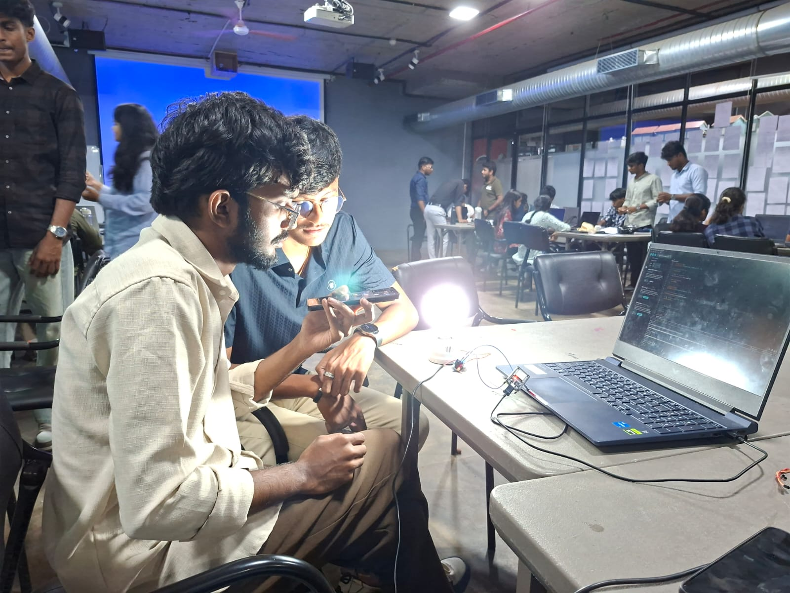
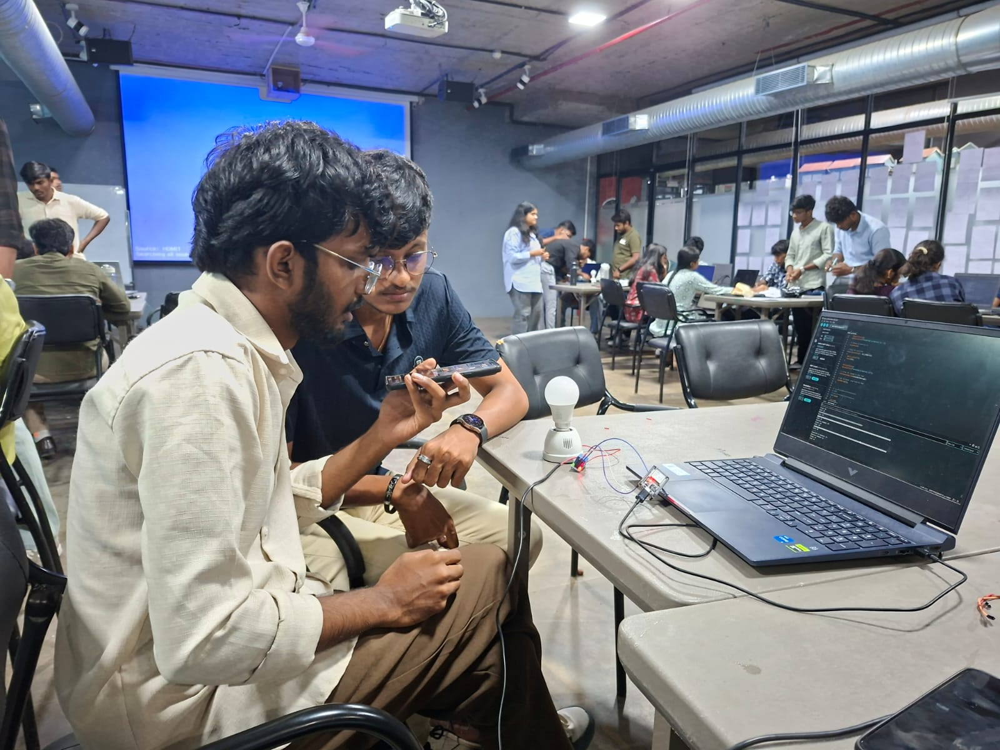

From Hardware to Connected Systems
Week 7 focused on understanding how microcontrollers can communicate with web applications, cloud platforms, and external services. Using the ESP32 and Arduino IDE, I worked on three IoT-based tasks that gradually increased in complexity — from controlling an LED through a local web server to controlling it through the cloud and finally using voice commands.
ESP32 Web Server
Controlling an LED through a web browser using an ESP32-based local web server.
Create a web-based control system where an LED connected to the ESP32 can be switched ON and OFF from a browser.
Components Used
Setting Up the Hardware
The LED was connected to one of the ESP32's GPIO pins through a resistor to limit the current. The basic connection consisted of the ESP32 GPIO, resistor, LED, and ground.
Setting Up Arduino IDE
Arduino IDE was configured for ESP32 development. The appropriate ESP32 board and COM port were selected before uploading the program.

Connecting ESP32 to Wi-Fi
The Wi-Fi credentials were added to the program. After uploading the code, the ESP32 connected to the network and displayed its assigned IP address through the Serial Monitor.

Creating the Web Interface
A simple HTML-based interface was created inside the ESP32 program. The webpage contained controls for switching the LED ON and OFF.

Processing Browser Requests
When a button was pressed, the browser sent a request to the ESP32 web server. The ESP32 processed the request and changed the GPIO state accordingly.

Testing the System
The ON and OFF commands were tested through the browser and the physical LED response was verified. This also provided practical experience in debugging Wi-Fi and web-server communication.


ESP32 + Adafruit IO
Connecting the ESP32 to a cloud platform and controlling the device using MQTT-based communication.
Extend the local ESP32 control system into a cloud-based IoT application using Adafruit IO and MQTT.
Technologies Used
Creating the Adafruit IO Account
I created an Adafruit IO account and explored its dashboard and cloud-based communication features. Adafruit IO provides feeds that can be used to exchange information between connected devices and the cloud.
Creating an IoT Feed
A dedicated feed was created for the LED control. The feed acted as a communication channel between the ESP32 and the Adafruit IO cloud platform.

Configuring the ESP32
The ESP32 program was configured with the Wi-Fi credentials along with the required Adafruit IO username, key, and feed information.

Understanding MQTT
This activity introduced me to MQTT, a lightweight communication protocol commonly used in IoT applications. I learned the basic concept of publishers, subscribers, and message brokers.

Connecting ESP32 to Adafruit IO
After connecting to Wi-Fi, the ESP32 established communication with Adafruit IO. The device could then receive information from the configured feed.

Sending LED Commands
When the LED control value was changed through the Adafruit IO interface, the corresponding information was communicated to the ESP32. The ESP32 processed the received value and changed the LED state.

Testing Cloud Communication
I tested the communication by changing the LED control value through the Adafruit IO dashboard and checking whether the ESP32 received and processed the command correctly.


ESP32 + Voice Assistant + IFTTT
Connecting voice commands to physical hardware using IFTTT and web requests.
Build a voice-controlled IoT system where a voice command triggers an action on an LED connected to the ESP32.
Technologies Used
Preparing the ESP32 & Exploring IFTTT
The ESP32 was programmed to connect to Wi-Fi and listen for incoming requests. Separate actions were configured for switching the LED ON and OFF.

Creating the IFTTT Applet
IFTTT was used to connect the voice command with the ESP32. The basic workflow follows the "If This, Then That" concept, where a trigger produces a predefined action.

Creating the Voice Trigger
A specific voice phrase was configured as the trigger. When the voice command was detected, the corresponding IFTTT applet was activated.

Adding Ada Fruit
The ESP32 received the request and identified the command. Based on the received instruction, it changed the GPIO state of the connected LED.

Configuring the Web Request
After receiving the voice trigger, IFTTT sent a web request containing the required command toward the ESP32.

Creating the OFF Command
A separate IFTTT configuration was created for switching the LED OFF. This demonstrated how different voice triggers can be mapped to different hardware actions.

Testing and Debugging
The voice commands were tested and the ESP32 response was checked. This helped me understand how to identify communication problems between the voice trigger, IFTTT, web request, and physical hardware.



Introduction to RTOS
Alongside the IoT activities, I was introduced to the fundamentals of Real-Time Operating Systems (RTOS). I learned how an RTOS allows an embedded system to manage multiple tasks in a structured and time-aware manner. I also applied these concepts through a small practical project.
What I Learned
From a Simple LED to an IoT System
The biggest takeaway from Week 7 was understanding
that an IoT system is not just about programming a
microcontroller. It involves connecting hardware,
networks, software, cloud platforms, and user
interfaces into one working system.
Starting with a simple browser-controlled LED and
progressing toward cloud and voice-based control
gave me a practical understanding of how connected
devices can evolve into more intelligent and
automated systems.